fit = lm(flies~I(1:length(flies)))
summary(fit)14 Series de Tiempo
Los datos de las series temporales son vectores de números, normalmente espaciados regularmente en el tiempo. Los recuentos anuales de animales, los precios diarios de las acciones, las medias mensuales de la temperatura y los detalles minuto a minuto de la presión sanguínea son ejemplos de series temporales, pero se miden en diferentes escalas de tiempo.
A veces, el interés está en la propia serie temporal (por ejemplo serie temporal en sí misma; si es cíclica o no, o si los datos se ajustan a un modelo teórico concreto), y a veces la serie temporal es incidental a un experimento diseñado (por ejemplo, medidas repetidas).
Los tres conceptos clave del análisis de series temporales son
- Tendencia,
- Dependencia serial, y
- Estacionalidad
Ejemplo: El ecologista australiano A.J. Nicholson crió larvas de moscas en trozos de hígado en cultivos de laboratorio que sus técnicos mantuvieron en funcionamiento continuo durante casi 7 años (361 semanas, para ser exactos). Las series temporales para número de moscas adultas tiene el siguiente aspecto:
Durante las primeras 200 semanas, el sistema presenta ciclos muy regulares.
Después de la semana 200, las cosas cambian (tal vez haya surgido una mutación genética); los ciclos se vuelven mucho menos claros, y la población comienza una pronunciada tendencia ascendente.
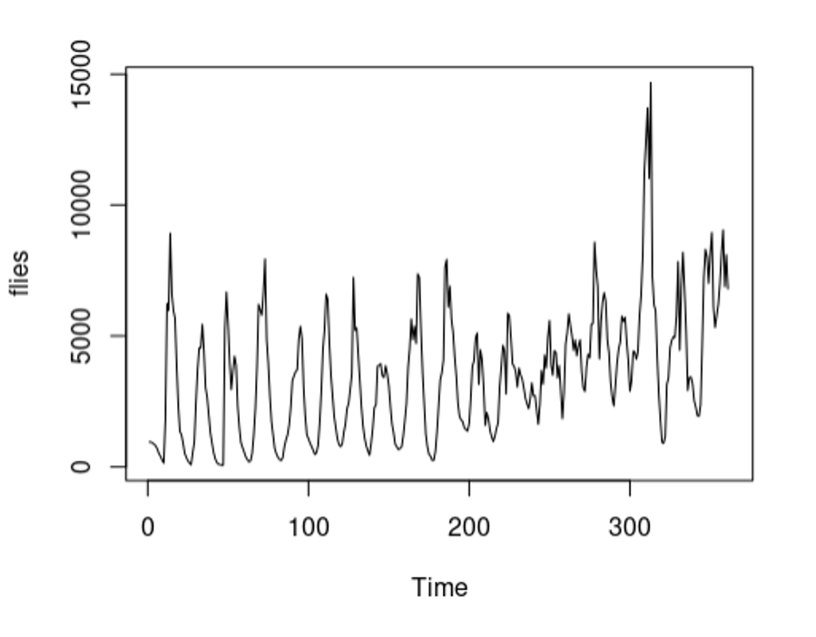
Hay dos temas importantes a tener en consideración en el análisis de series temporales: autocorrelación y autocorrelación parcial.
Autocorrelación: describe cómo la población de esta semana está relacionada con la población de la semana pasada. Esta es la autocorrelación en el lag 1.
Autocorrelación parcial: describe la relación entre la población de esta semana y la población en el lag t una vez que hemos controlado las correlaciones entre todas las semanas sucesivas entre esta semana y la semana t. Ejemplo, la autocorrelación parcial con lag 2 es solo aquella que lag 1 no explica. (es importante en muchos modelos predictivos, ej. ARIMA)
OJO: los lags no tienen por que se ser semanales, depende la unidad de tiempo
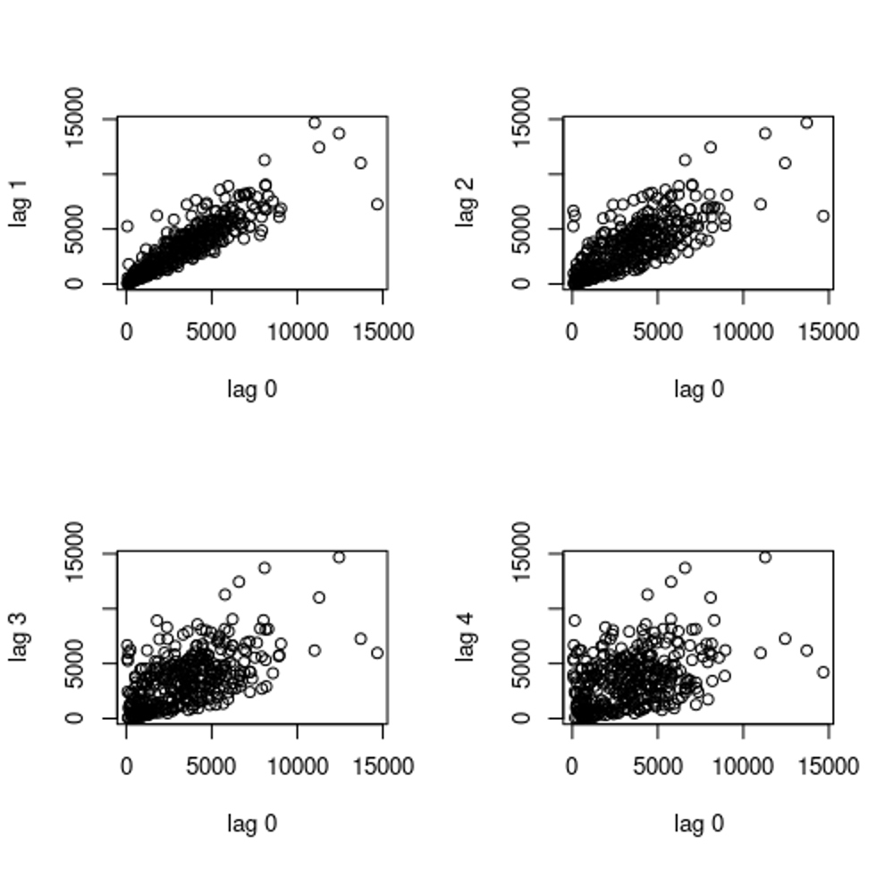
En series cíclicas, las relaciones lejanas pueden ser negativas.
Por lo que la autocorrelación puede variar entre -1 y 1
Veamos la estructura de las autocorrelaciones con la función acf (autocorrelation function)
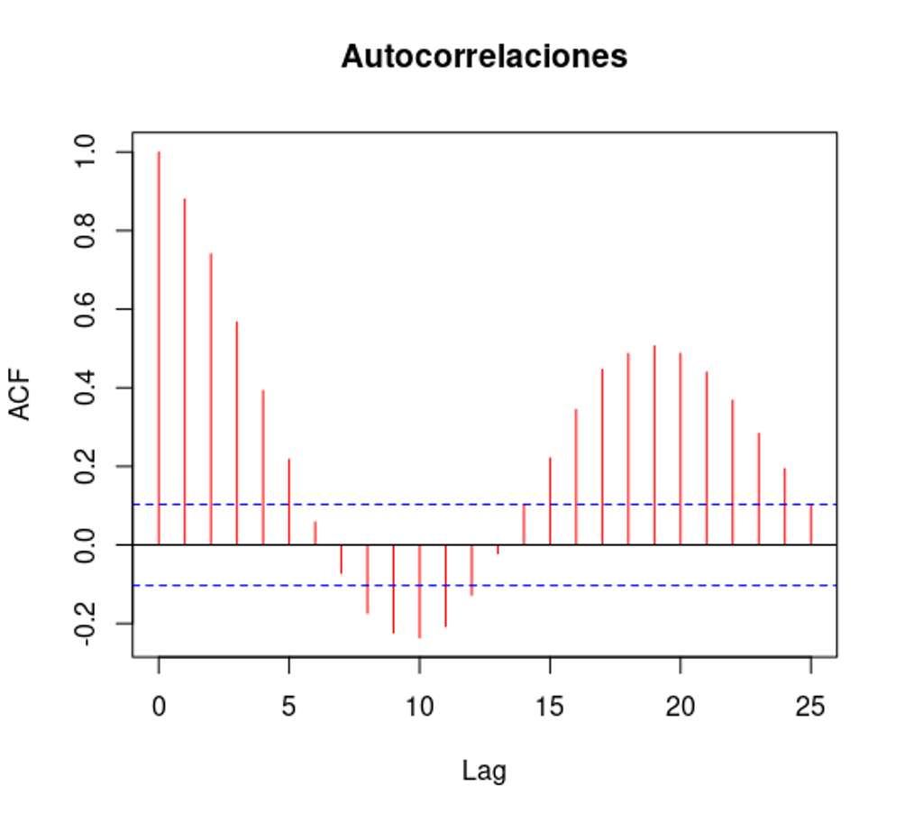
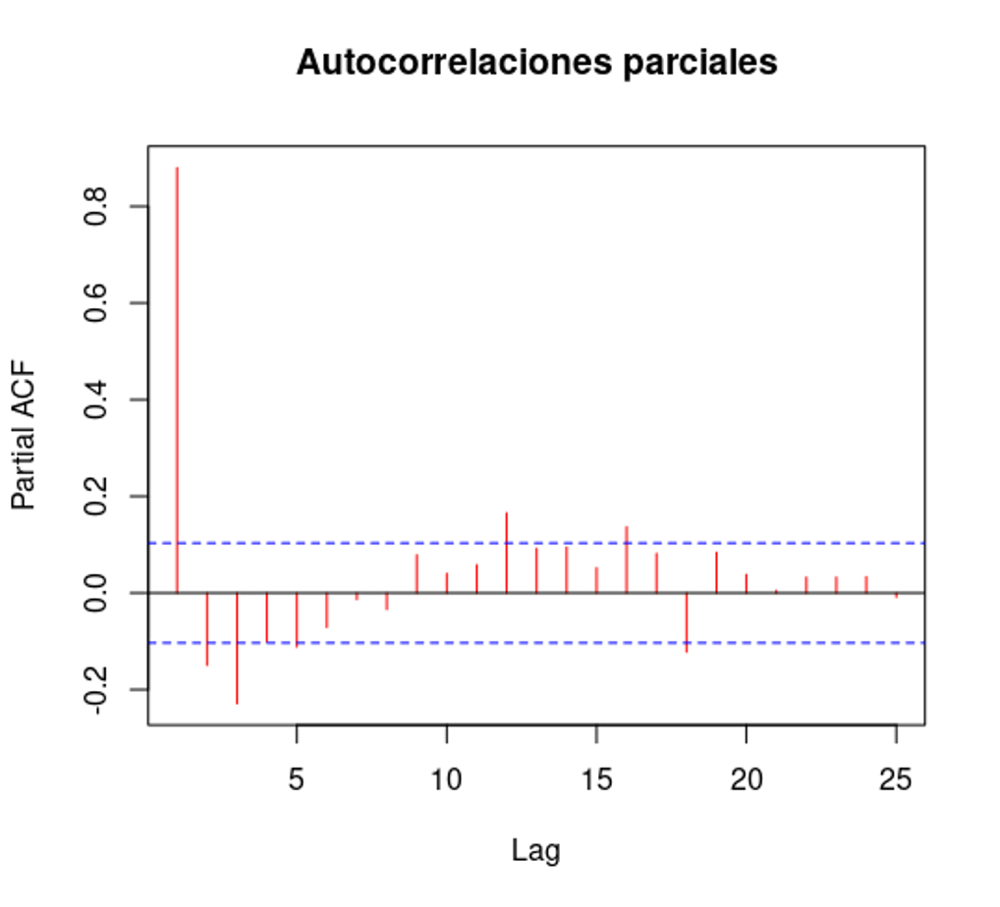
14.1 Regresión en Series de Tiempo
Regresión de la serie contra el tiempo (length()), repesenta de forma general la Tendencia de la serie de tiempo.
Tendencia significativa (***); al aumentar en promedio 11 moscas cada semana
14.2 Práctica
Cargar Datos de series de tiempo (semanal)
blowfly <- read.table("https://raw.githubusercontent.com/shifteight/R-lang/master/TRB/data/blowfly.txt", header=T, nrows = 361)
names(blowfly) # Solo una columna[1] "flies"# crear objeto de serie de tiempo con ts()
flies <- ts(blowfly$flies[1:nrow(blowfly)-1])
summary(flies) Min. 1st Qu. Median Mean 3rd Qu. Max.
60 1444 3339 3487 4892 14683 plot(flies)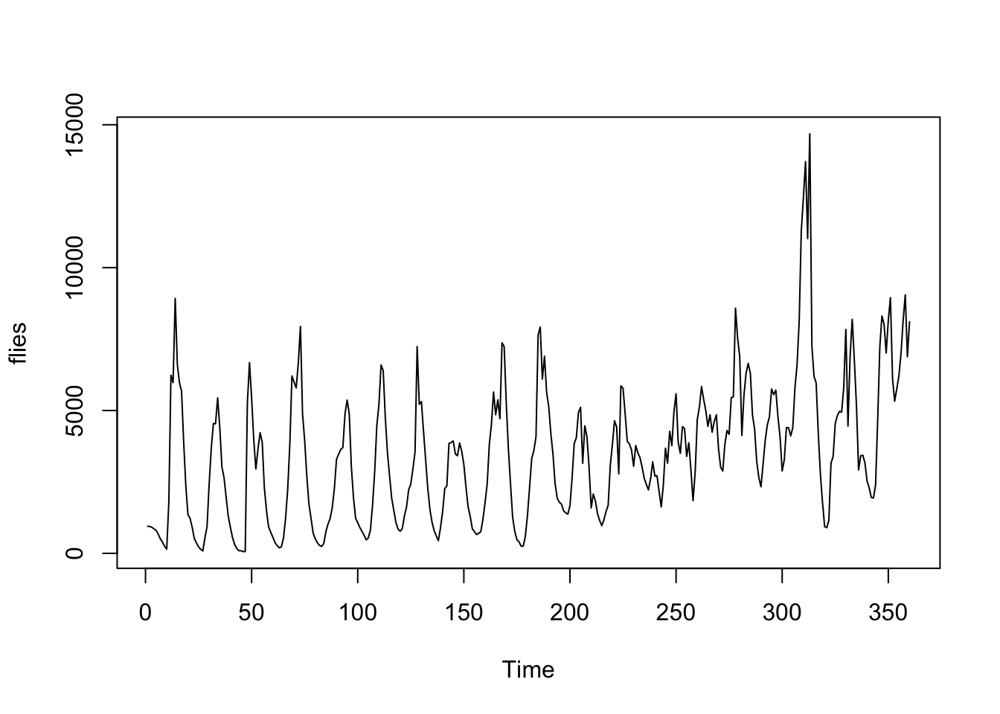
14.2.1 Relación de Lags (>0) con Lag 0
par(mfrow = c(2, 2))
for (i in 1:4) {
plot(flies[-c(360:(360 - i + 1))], flies[-c(1:i)], xlab = 'lag 0',
ylab = paste0('lag ', i))
}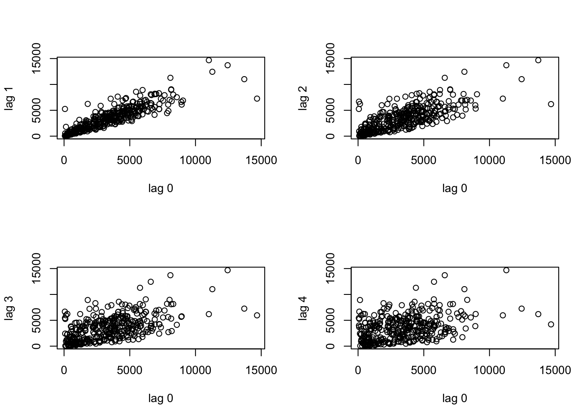
par(mfrow = c(2, 2))
for (i in 7:10){
plot(flies[-c(360: (360-i+1))], flies[-c(1:i)], xlab='lag 0', ylab=paste0('lag ',i) )
}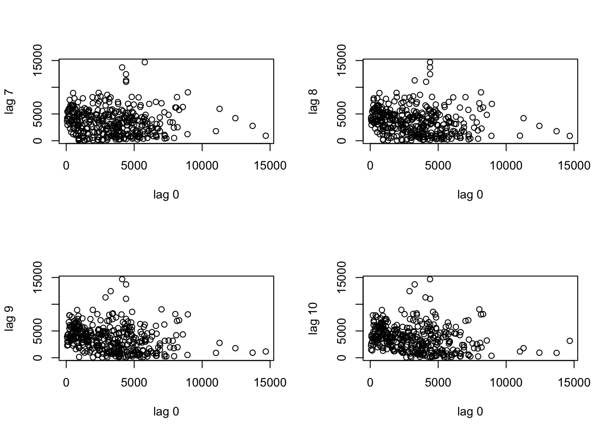
par(mfrow = c(1, 1))14.2.2 Autocorrelación Espacial Completa
# plot de relaciones de autocorrelacion
acf(flies, main = "Autocorrelaciones", col = "red")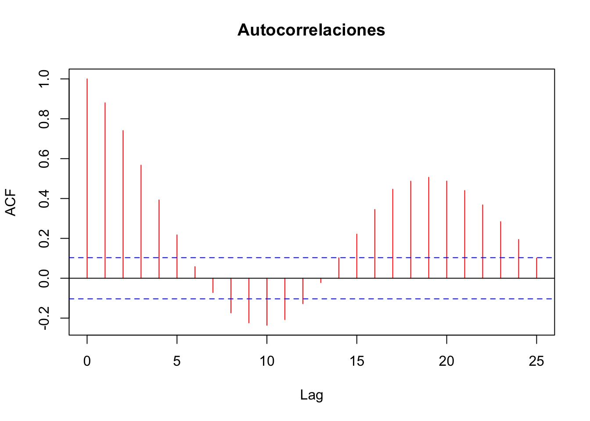
No vera evidencia mas convincente de los ciclos que esta. Los blowflies exhiben ciclos regulares altamente significativos con un periodo de 19 semanas. Las lineas discontinuas azules indican los valores de umbral para la correlacion significativa.
14.2.3 Autocorrelación Parcial
# plot de relaciones de autocorrelacion
acf(flies, main = "Autocorrelaciones parciales", type = "p", col = "red")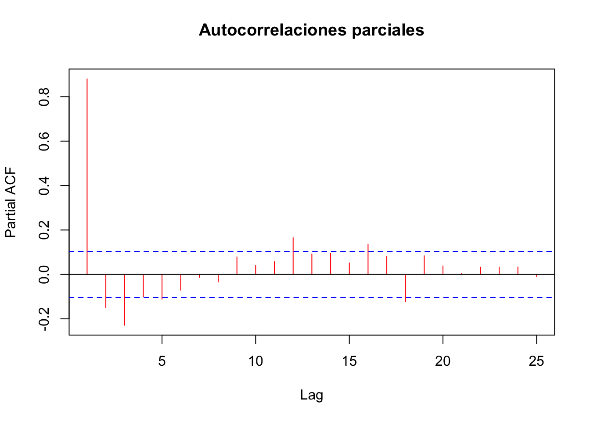
Los efectos significativos dependientes de la densidad se manifiestan con retrasos de 2 y 3 semanas con otros, marginalmente. los efectos negativos significativos con desfases de 4 y 5 semanas.
Estos retrasos reflejan la duracion de la larva y la pupa periodo (1 y 2 periodos, respectivamente). Los ciclos son claramente causados por la sobrecompensacion de la dependencia de la densidad, como resultado de la competencia intraespecifica entre las larvas por el alimento (lo que Nicholson bautizo como “scramble”. Hay una curiosa retroalimentacion positiva con un retraso de 12 semanas (12 a 16 semanas, de hecho). ¿Quizas puedas pensar en una posible causa para esto?
14.2.4 Tendencia de la serie de tiempo (lm)
# regresion de la serie contra el tiempo (length())
fit = lm(flies ~ I(1:length(flies)))
summary(fit)
Call:
lm(formula = flies ~ I(1:length(flies)))
Residuals:
Min 1Q Median 3Q Max
-4125.3 -1656.1 -445.4 1131.9 9747.2
Coefficients:
Estimate Std. Error t value Pr(>|t|)
(Intercept) 1512.742 227.246 6.657 1.05e-10 ***
I(1:length(flies)) 10.936 1.091 10.024 < 2e-16 ***
---
Signif. codes: 0 '***' 0.001 '**' 0.01 '*' 0.05 '.' 0.1 ' ' 1
Residual standard error: 2151 on 358 degrees of freedom
Multiple R-squared: 0.2191, Adjusted R-squared: 0.217
F-statistic: 100.5 on 1 and 358 DF, p-value: < 2.2e-16Esto muestra que hay una tendencia al alza altamente significativa de alrededor de 11 flies adicionales promedio cada semana.
plot(flies)
lines(predict(fit), col = "red", lty = 2, lwd = 1.5)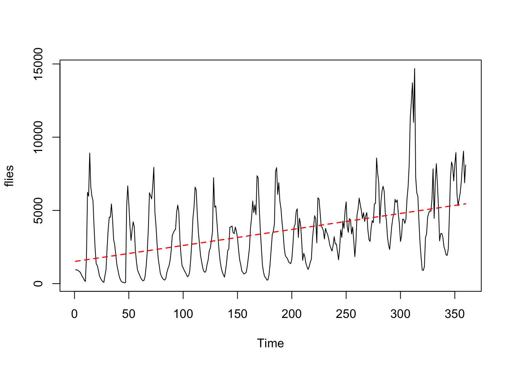
Podemos eliminar la tendencia de los datos restando los valores ajustados de la regresion lineal de segundo en el numero de dia:
detrended <- flies - predict(fit)
par(mfrow = c(2, 2))
plot(detrended)
abline(h = 0, lty = 2, col = "blue", lwd = 2)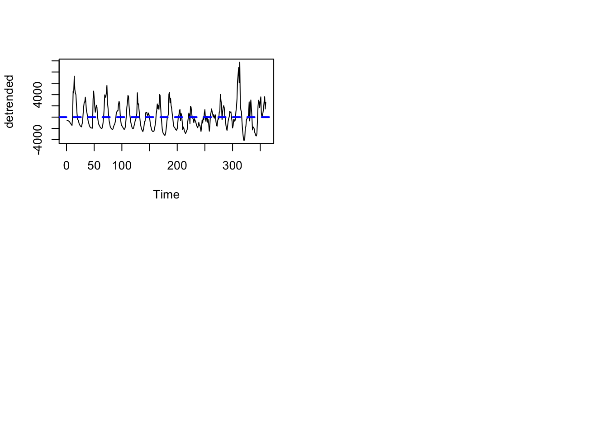
Se evalua la autocorrelacion con las tendencias eliminadas (detrended) completa
acf(detrended, main = "")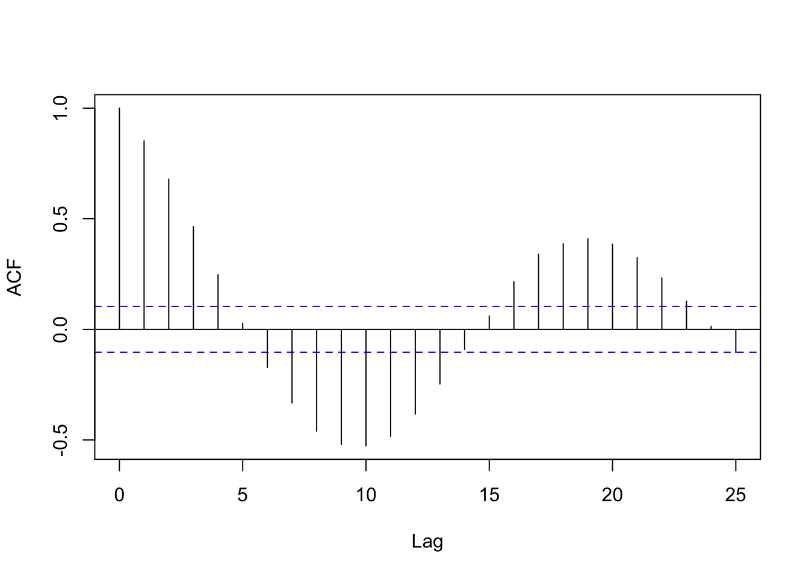
# parcial
# acf(detrended, main = "", type="p")
par(mfrow = c(1, 1))14.2.5 Medias Móviles
library(zoo)
Attaching package: 'zoo'The following objects are masked from 'package:base':
as.Date, as.Date.numerictemperature <- read.table("https://raw.githubusercontent.com/shifteight/R-lang/master/TRB/data/temp.txt",header=T)attach(temperature)
temps = ts(temps)
par(mfrow = c(1, 1))
plot(temps)
prom3 = rollapply(temps, width = 3, mean) # argumento width especifica el ancho de la ventana (n° observaciones)
# que se alinea con la muestra original
lines(prom3, col="blue")
prom5 = rollapply(temps, width = 5, mean)
lines(prom5, col="green")
prom7 = rollapply(temps, width = 7, mean)
lines(prom7, col="red")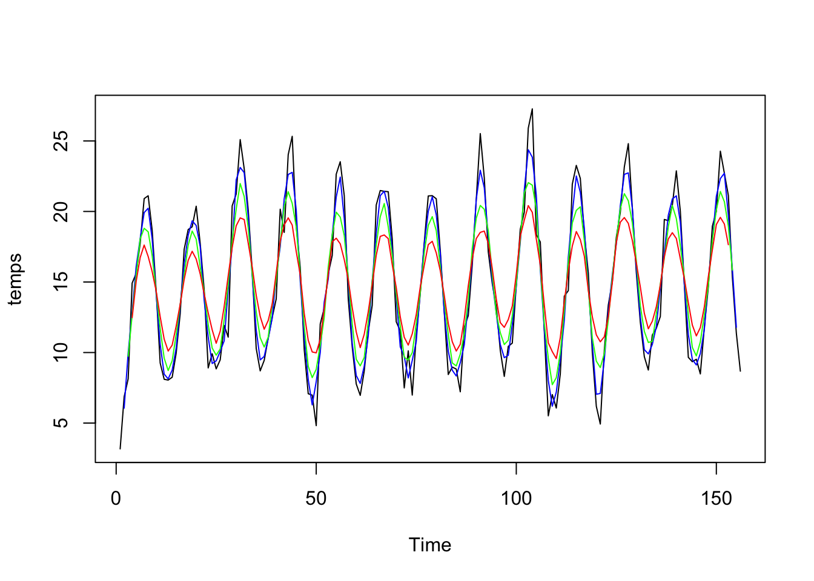
Continuar